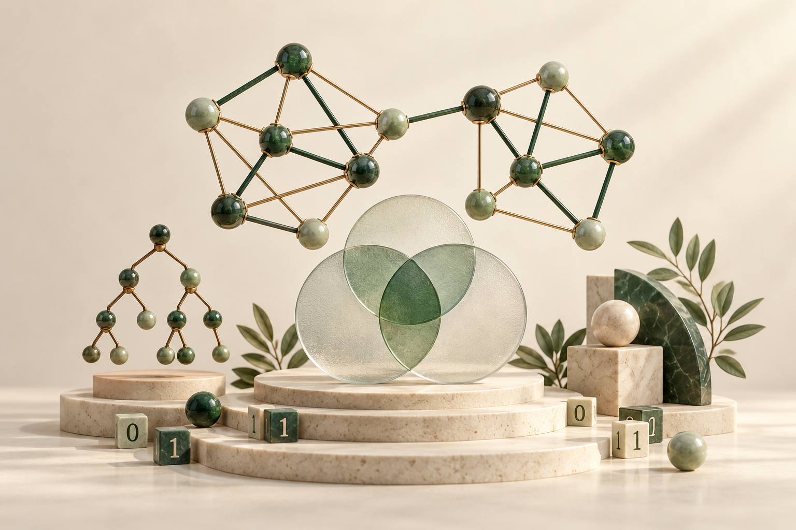

15份课堂课件
09份个人笔记与练习
02份历年试卷
01 / COURSEWARE
跟着课堂，逐章展开
课件保持老师原有排版，打开即可翻页、搜索、缩放与下载。
建议阅读顺序
01 课堂课件
02 章节速查与补充理解
03 习题自测与历年试卷
课件统一为 PDF，保持课堂原有排版。章节编号沿用原课件，目录中没有第六、七章课件。
下载历年试卷压缩包 ↗阅读器内可搜索课件正文、选择文字与翻页。正在载入课件…
若阅读器无法显示，可直接打开 PDF。

课件保持老师原有排版，打开即可翻页、搜索、缩放与下载。
01 课堂课件
02 章节速查与补充理解
03 习题自测与历年试卷
课件统一为 PDF，保持课堂原有排版。章节编号沿用原课件，目录中没有第六、七章课件。
下载历年试卷压缩包 ↗阅读器内可搜索课件正文、选择文字与翻页。正在载入课件…
若阅读器无法显示，可直接打开 PDF。